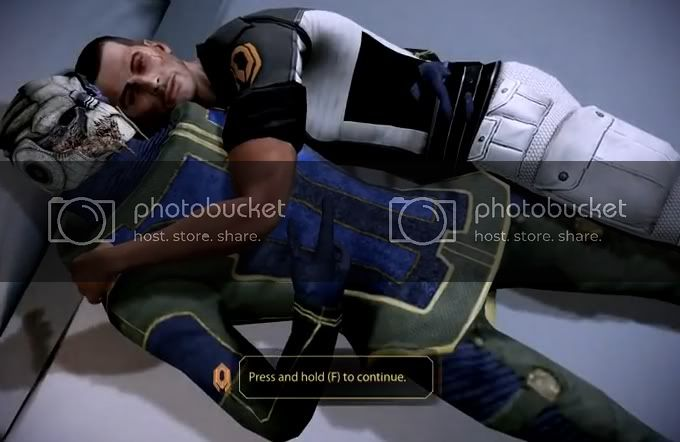

I hope we get to keep Legion in Mass Effect 3.
I kept everybody alive, I just hope I get to keep everybody. I’d understand if Thane didn’t carry over, as, for all we know, the next game might take place a year later, but things seem more imminent (if that makes sense) at the end of ME2 than ME1.
Zaeed prolly won’t cuz he sucks and is a DLC.
More than anything, I demand they keep Tali and Garrus. I’m sure they will, because they seem to be the two solids in the ME universe.
Based on their attitudes at the end of the game (even if you make the renegade choice in regards to the facility), Miranda and… er… That other cerberus officer… Sound like they would stay, but who knows. Mr. Illusive Man might have some splodey-implants in their necks. That would make for interesting cutscenes… Juicy.
Legion always talks like he is going to have to go back to the Geth collective soon, but I sincerely hope he remains for Mass Effect 3. The rest, I really couldn’t give a damn about. The justicar probably would stay, but because you can loose her in favor of another bitch who definitely WOULDN’T stay, I bet they’ll come up with some reason for her to be busy doing something. But now I’m just stating crap about everybody, and that wasn’t the point of this post.
I think it was: Tali, Garrus, and Legion better stay.
I agree. Especially with Garrus. He was always my favorite. I like Doc, and Grunt also though. Grunt is a damage shield. He really comes in handy during my current play through on hardcore. Those Heavy Mechs are pretty freaking strong at that difficulty level.
Fingers crossed the PC version sells. EA canceled the PC version of Dead Space 2, and I’m afraid that they might do the same with ME3.
Dead space felt like it was missing a portion of it’s epicness on consoles… Things just didn’t look right. Maybe it’s because I love my computer, but I think it’s a mistake for any game company to cut PC’s from their plans.
I doubt Bioware would make the game for console only. PC is the birthplace of Bioware’s fan base. That is like suggesting ID’s next 3d shooter will be console only.
Yeah, lets just hope they don’t pull a Bungie, Halo 1 and 2 available on PC, HAHYOUCAN’THAVEHALO3!!!
On-topic: With the number of people that could have died in ME2… God they’re gonna have to do a lot of line recording. And story writing. And event scripting. It’ll be like… three games’ worth of content.
New weapon and armor downloadable through cerberus network. Haven’t tried it yet. About to play right now. :retard:
I’m having this really weird bugg.
I decided to do a second playthrough. I borrowed the cd to a friend, so I installed a no cd patch cuz I couldn’t wait. Dunno if that has something to do with it.
Anyway, after the first mission, you have to spend your first squad points. As soon as you do that the door opens and you can move on. However, I don’t have any squad points!
I redid the mission too, but it didn’t work. Anyone have an idea about what’s up?
I can’t believe what happened… I’m enjoying the cerberus new updates, they make me lol. Well, not in this case, but, they’re cool.
Score

H-HOW???!!
Er, anyway.
I just had a strange thing happen. I was watching the scene right after you knock the Reaper down the first time, and up above, in the sky somewhere behind Shepard, something was rotating, and through it, like a window, the Illusive Man’s face was just floating there.
What is this I don’t even
EDIT: FUCKING NINJAS!
I just replaced my 512mb 8800gt with a 1gb 4890, and although the new card runs games at higher fps, the elevator load times in ME2 are really long now, like 30 sec, as opposed to the <1sec to 2 second times I had before. Anyone with ATI see long elevator rides? Anyone with nVidia see short ones? Wondering if it’s tied to the cards or something else going on.
EDIT: Garrus is a romance option for Shepard…female Shepard that is, which is why it looks kind of off. Someone either shopped male Shepard in or replaced the model. It’s pretty funny either way lol.
Yeah, I’ve noticed a number of strange bugs during the game. Theres mundane stuff like Joker’s arm floating above his armrest, to moderately odd stuff like glitching through an invisible wall and ending up 20 feet in the air or Shepard turning sideways while in shooting mode, but I can’t recall anything as strange as your glitch.
I got stuck in a wall. Thats the worst glitchiness I’ve seen.
Just be careful about cutting corners or running into corners, or just about anything having to do with corners. There’s a chance you’ll end up on top of the world. Sometimes you can fall back in, but other times you just get stuck up there. I think it happened… 4 times. The worst was on my way through the facility with Jack to blow it up, I got caught up on one of the support beams in the last room before hers.
I noticed one other glitch I seem to be regularly having. At the end of Garrus’s loyalty mission, after you’re leaving Harkin, the shuttle just pops into view without you and Garrus being replaced by scenery. Then this weird ghosting will come off and on during the rest of the mission. Not totally bizarre but it is rather distracting. In the words of Joker it makes it “look like a dream sequence” lol
Oh yeah, in the Garrus mission, during pretty much the entire sniping session… It’s as if (were it source) they used the nodraw texture instead of a… skybox. Making everything get echoed when it passed in front of it. Through the window, that make it look like some sort of blur. Really wierd, and probably just an oversight when making it look like it was a certain time of day. Probably referenced something they forgot to actually put in.
So was Infinity Ward. 
Edit:
https://www.youtube.com/watch?v=kxQOY7IQh_g
https://www.youtube.com/watch?v=XqFpGD_Z-_I&feature=related
https://www.youtube.com/watch?v=nDz4cT4g788&feature=related
This is hilarious.